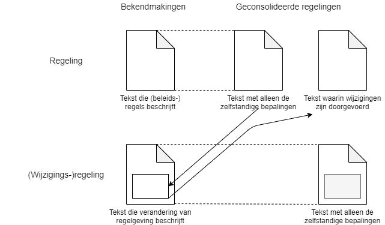
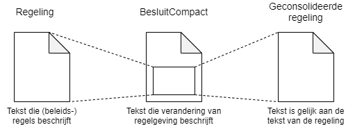
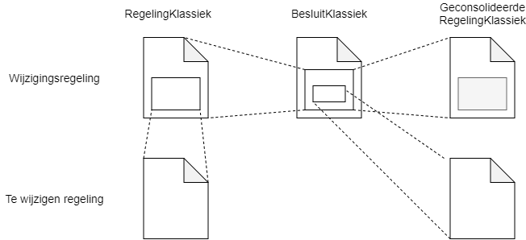

Samenhang van tekst in besluit en regeling
Van bekendmaking naar geconsolideerde regeling
De tekstmodellen in STOP zijn zo geconstrueerd dat in de tekst van de bekendmaking van een besluit voldoende informatie zit om de tekst van de geconsolideerde regeling af te leiden. Daarbij worden de voorschriften gevolgd die juristen aan het samenstellen van de geconsolideerde tekst stellen.

Juridisch gezien is de vorm waarin een besluit bekendgemaakt wordt een regeling. Als de regeling alleen (beleids-)regels bevat heeft de consolidatie daarvan dezelfde tekst als de bekendmaking.
Als het een (wijzigings-)regeling betreft die een andere regeling wijzigt, dan leidt consolidatie tot twee nieuwe versies:
Eén nieuwe tekst van de regeling die gewijzigd wordt, waarin de wijzigingen zijn aangebracht zoals beschreven in de wijzigingsregeling. Teksten die niet meer van toepassing zijn worden niet verwijderd maar als vervallen gemarkeerd.
Een nieuwe geconsolideerde regeling die de consolidatie is van de wijzigingsregeling. Hierbij worden alleen die onderdelen van de wijzigingsregeling overgenomen die zelfstandige bepalingen vormen. De teksten die wijzigingen in andere regelingen beschrijven worden weggelaten of vervangen door een redactionele opmerking.
De consolidatie van de wijzigingsregeling kan achterwege blijven als er geen zelfstandige bepalingen zijn. De geconsolideerde tekst zou in dat geval een "lege huls" zijn waar voornamelijk redactionele opmerkingen overblijven.
Geoptimaliseerd voor automatisering
STOP kent een reeks compacte tekstmodellen die geoptimaliseerd zijn om het consolideren na de bekendmaking geautomatiseerd te laten verlopen. Bij het ontwerp zijn drie uitgangspunten gehanteerd:
1 De tekst van de geconsolideerde regeling is gelijk aan de tekst die de (beleids-)regels beschrijft. 2 Wijzigingen worden op een machine-leesbare manier in de bekendmaking opgenomen. 3 De tekst in de bekendmaking die in de consolidatie weggelaten kan worden als er geen zelfstandige bepalingen in de bekendmaking zouden staan is gescheiden van de tekst met zelfstandige bepalingen.

Punt (1) heeft geleid tot een verscheidenheid van tekstmodellen voor verschillende type regelingen. Punt (2) komt tot uitdrukking in het renvooimechanisme. En (3) heeft geleid tot het tekstmodel BesluitCompact waarin ofwel de tekst van een nieuwe regeling is opgenomen ofwel de te wijzigen tekst in renvooi. Als in het BesluitCompact alleen renvooiteksten zijn opgenomen is het te vergelijken met een wijzigingsbesluit zonder zelfstandige bepalingen en hoeft het niet geconsolideerd te worden. Als het BesluitCompact de tekst van een nieuwe regeling bevat, dan moet het wel geconsolideerd worden. De consolidatie bestaat dan uit alleen de tekst van de nieuwe regeling; de rest wordt weggelaten.
Deze werkwijze sluit aan bij de manier waarop veel decentrale overheden hun besluiten vastleggen. Omdat bij deze aanpak de tekst van de regeling zoals die wordt gemaakt voorafgaand aan de vaststelling van het besluit gelijk is aan de tekst van de geconsolideerde regelingen (waar volgende wijzigingsbesluiten op gebaseerd zijn), is het voorbereidende werk voor volgende besluiten (aanpassen van de regeling) volledig ontkoppeld van het maken en vaststellen van besluiten.
Hybride aanpak
Voor de rijksoverheid sluiten in het geval van regelingen met algemeen verbindende voorschriften de geoptimaliseerde modellen (BesluitCompact en RegelingCompact) onvoldoende aan bij de bestaande praktijk van consolideren. Daarnaast werd het onwenselijk gevonden dat beschrijvingen van wijzigingen in andere regelingen niet in het lichaam waren opgenomen. STOP heeft voor de rijksoverheid daarom alternatieve klassieke modellen, BesluitKlassiek en RegelingKlassiek.

Om beter aan te sluitenbij de bestaande praktijk ligt in elk BesluitKlassiek een RegelingKlassiek besloten. Hierdoor blijft een deel van de scheiding tussen wel en niet te consolideren delen van de bekendmaking gehandhaaft: de teksten die zeker niet geconsolideerd hoeven te worden zijn onderdeel van BesluitKlassiek maar niet van RegelingKlassiek, net zoals bij de compacte modellen.
Om tegemoet te komen aan de wens om de wijzigingsbeschrijvingen onderdeel te laten zijn van de regeling worden de renvooiteksten niet in het besluitgedeelte maar in de wijzigingsregeling opgenomen. Bij consolidatie wordt de inhoud daarvan vervangen door een redactionele opmerking. Maar net als bij de compacte modellen is alle tekst die nodig is voor de geconsolideerde regeling in RegelingKlassiek te vinden. Omdat in RegelingKlassiek tekstdelen zijn die specifiek zijn voor de bekendmaking is de ontkoppeling tussen het werken aan nieuwe versies van de regeling en het werken aan besluiten niet zo sterk als bij de compacte modellen.